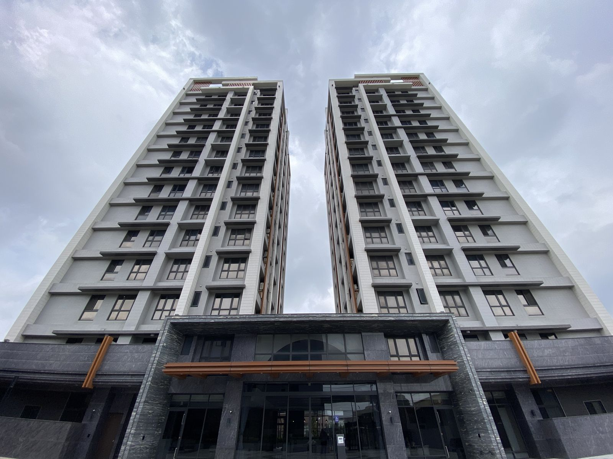
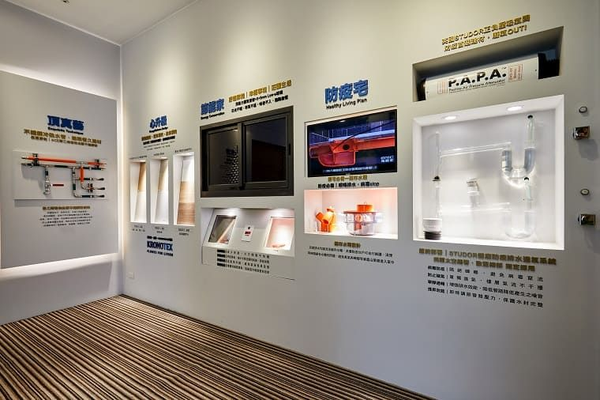
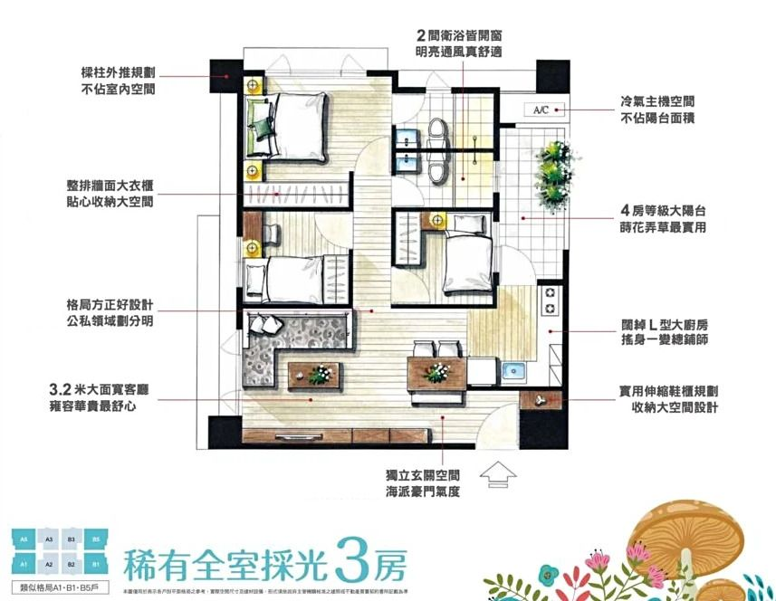
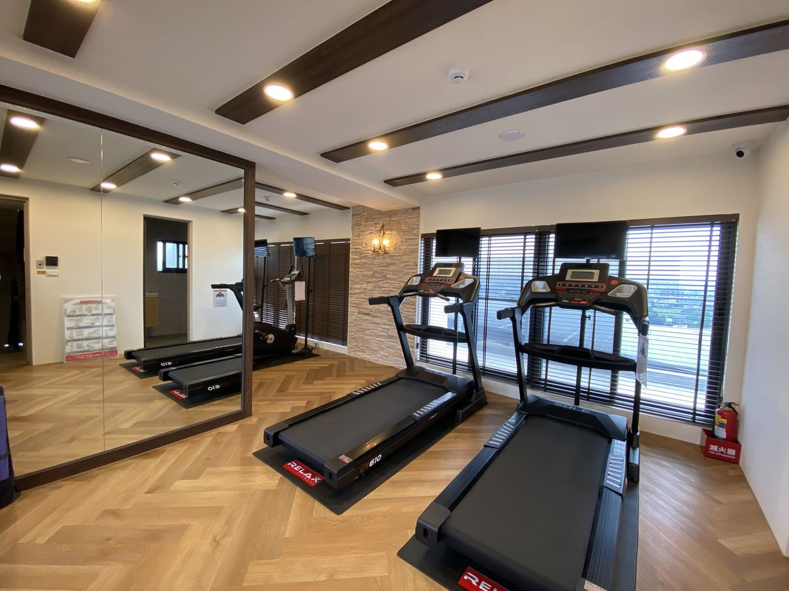
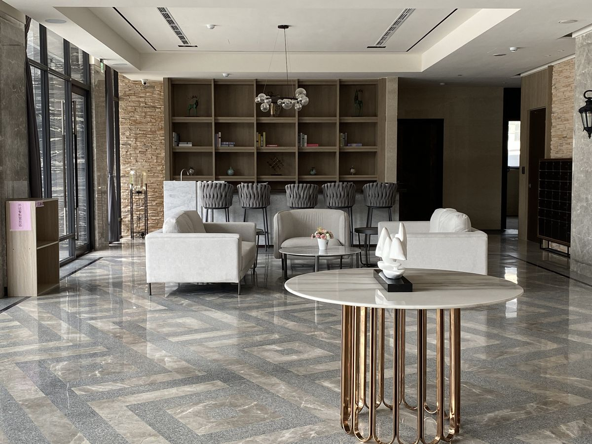

玖都莊園
頂樓邊間 3 房車，高規格防疫建材
113 年底完工的準新案，把智能新風、太陽能發電、長庚活水這些「健康宅」規格，實際做進日常細節裡。這是我手上的委託案件，資料來自物件現況調查與銷售現場，不是建商官網。
不是裝潢堆出來的新，是建材規格本身就新。
以下重點來自物件現況調查表與銷售現場公開資料，我會標示資料性質，實際規格以謄本、權狀及契約為準。
高規格防疫建材
GIA 智能正負壓活氧新風機、英國 Studor 排水通風系統＋PAPA 吸氣閥、太陽能發電等設備一次到位。
頂樓邊間，2～3 面採光
位於 14 樓頂樓，東北朝西南，戶戶邊間規劃，衛浴全開窗，室內明亮通風。
單層四併雙梯
全社區 112 戶，但同層僅 4 戶、雙電梯動線，日常出入相對單純。
雙商圈機能
距大江購物中心約 700 米，雙享大江生活圈與青埔特區生活圈；國道 1 號、2 號及高鐵 A18 站車程約 5 分鐘。
銷售現場的建材展示牆，實際拍給你看。
以下建材品項為銷售現場展示牆與物件現況調查表所列內容，我整理成重點，不代表我的保證，實際配置與廠牌以正式建材表為準。
- GIA 新風機
- Studor 排水系統
- 太陽能發電
- 5+5mm LowE 膠合玻璃
- 德國太格木地板
- 長庚活水系統
- Villeroy & boch 衛浴
- 恆溫龍頭
GIA 智能正負壓活氧新風機
銷售現場資料稱可自動調節室內外壓力差，搭配活氧系統輔助空氣品質管理。
英國 Studor 排水通風系統
搭配 PAPA 吸氣閥與總存水彎設計，銷售現場說法為加強排水管路的通風與防臭效果。
太陽能發電＋不鏽鋼冷熱水管
公共區域規劃太陽能發電設備；冷熱水管路標示為不鏽鋼材質並附絕緣披覆。
長庚活水系統＋高檔衛浴
搭配德國太格木地板、Villeroy & boch 衛浴與恆溫龍頭，衛浴與地坪用料規格偏向中高檔社區配置。

格局方正，公私領域分得清楚。
下圖為建商銷售現場提供的格局參考圖（類似格局 A1・B1・B5 戶），本戶實際格局以正式權狀與現場丈量為準。

3.2 米大面寬
銷售現場標示客廳面寬約 3.2 米，冷氣主機空間另外規劃，不佔陽台面積。
4 房等級大陽台
陽台尺度比照 4 房規劃，曬衣蒔花空間相對寬裕。
2 間衛浴皆開窗
兩間衛浴皆有對外窗，明亮通風，不是暗衛。
整排牆面大衣櫃＋玄關櫃
主臥整排牆面衣櫃，加上獨立玄關與伸縮鞋櫃規劃，收納空間比一般 3 房寬裕。
112 戶大社區，公設也不馬虎。
頂樓健身房
實拍照片可見跑步機、飛輪等有氧設備，搭配大面採光窗。
一樓交誼廳
大理石地坪與吧檯座位區，平常也可作為收外送、親友會客空間。
雙電梯動線
社區規劃 2 部電梯，同層僅 4 戶，尖峰時段等候相對不擁擠。
有警衛管理
物件現況調查表登載有警衛管理，實際排班與門禁方式請洽管理委員會。


公設項目、開放時間與使用規則，以管理委員會最新公告及規約為準，實際入內參觀請透過我安排。
大園近青埔，雙商圈都在生活半徑裡。
大江購物中心
物件現況調查表登載約 700 米，日常採買與用餐選擇多。
國道 1、2 號＋高鐵 A18
銷售現場資料稱車程約 5 分鐘內可達，對外交通便利。
公七公園
物件現況調查表登載鄰近公七公園，日常散步、運動有去處。
距離與車程為物件現況調查表及銷售現場概估，會因起點、路線與交通狀況不同而有差異，請以現場實測為準。
物件基本資料
資料整理自物件現況調查表，實際以正式謄本、權狀及買賣契約為準。最新屋況與可議空間，直接向小賈確認會更準確。
| 項目 | 內容 |
|---|---|
| 社區名稱 | 玖都莊園 |
| 地址 | 桃園市大園區中正東路三段（近青埔） |
| 登記總建坪 | 43.18 坪 |
| 主建物坪數 | 18.34 坪 |
| 附屬建物坪數 | 3.7 坪 |
| 公設坪數 | 11.76 坪（公設比約 34.7%） |
| 不含車位坪數 | 33.8 坪 |
| 車位 | 約 9.38 坪，坡道平面 |
| 格局 | 3 房 2 廳 2 衛 1 陽台 |
| 座向 | 東北朝西南 |
| 樓層 | 地上 14 層／地下 2 層，位於 14 樓（頂樓） |
| 建築完成日 | 113 年 11 月 29 日 |
| 總戶數 | 112 戶，同層 4 戶，電梯 2 部 |
| 管理費 | 每坪 80 元，約 $3,054／月（物件現況調查表資料，以管理規約為準） |
| 學校 | 五權國小、青埔國中 |
| 目前使用現況 | 自住中，看屋請先預約 |
| 目前銷售 | 青埔房仲小賈獨家委託 |
| 售價 | 1,688 萬（單價約 44 萬／坪，車位價格 200 萬） |
常見問題
這間房子現在能看屋嗎？
坪數含車位嗎？
公設比多少？公設有哪些？
頂樓會不會比較熱，或有漏水疑慮？
這是建商的官方網站嗎？
可以預約看屋嗎？
資料來源
- 物件現況調查表（委託當下由屋主與承辦人填具）
- 銷售現場建材展示牆、格局參考圖
- 土地與建物謄本公開登記資料